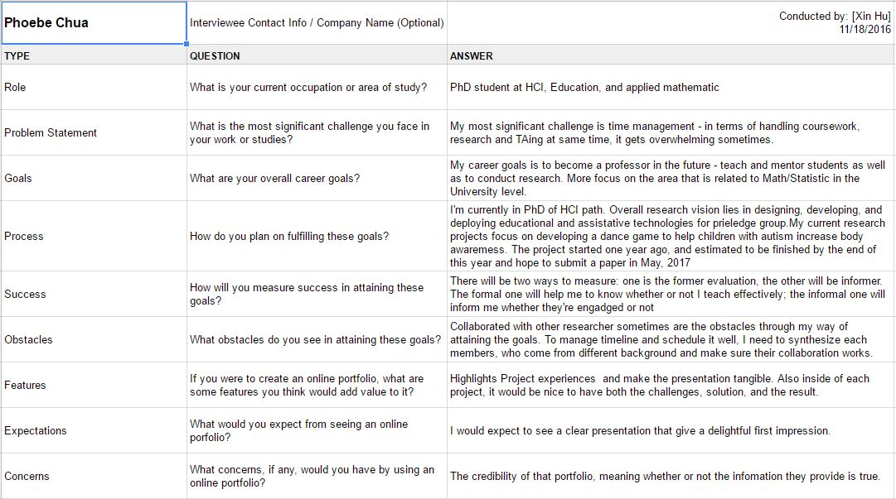
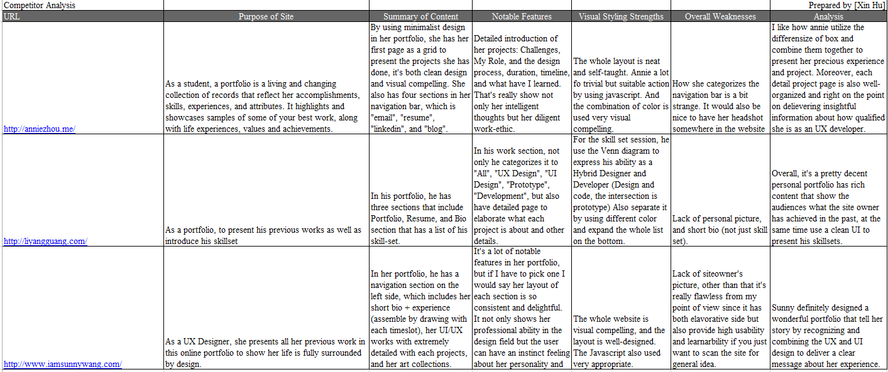
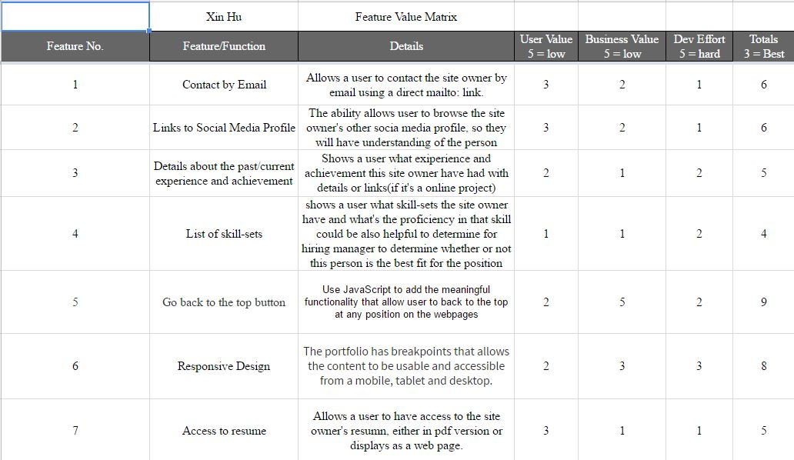
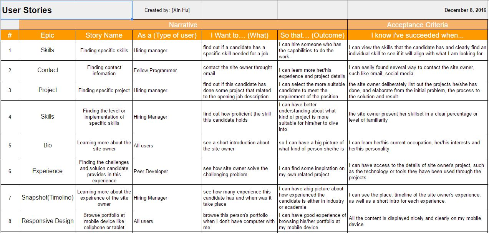
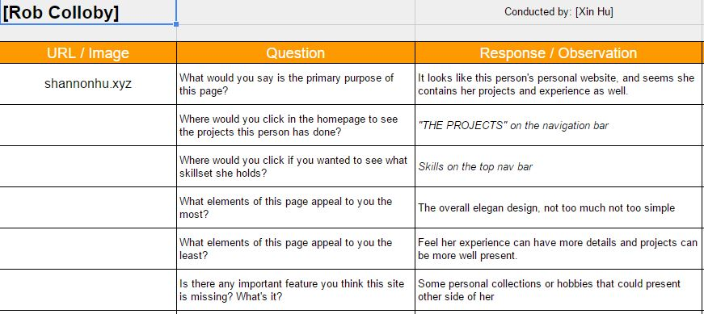
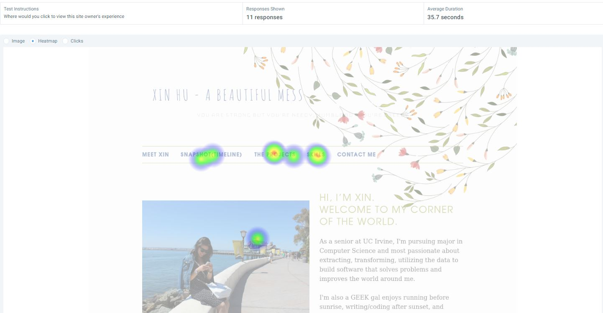

User Interviews
Who is my audience: The people I interviewed are all from three different categories, one is in academia, on in industry and one fellow classmate. I ask them the same sequence of question to understand their background, but if I can go back and do the interview again I probably will modify the questions into a deeper conversation. However, I have a good sense that people with diverse background and experience level is focusing on different aspect of an online portfolio, but at the same time there’s some common needs. For the people I interviewed in industry, he shows more desire on knowing the details about a person’s previous experience, as well as what did he/she learn from that experience. And from the people in academia and student, they focused on more the credibility and privacy issues aspect.
Competitor Analysis
Through the competitor analysis, I mostly looked up professionals from the LinkedIn contact in the UX Design field that I have, and more specifically, a current UX Designer/Engineer in the industry that has a CS background. The reason behind that is I’m leaning to the same path, and it will be more applicable and helpful to learn from somebody has the same background and same desire. After the deep go-through for a lot of portfolio, I picked three that has different styles but all have their own unique highlight. The way Annie uses grid system to present her projects caught my eyes and is something I would like to try when I get to the point that I have enough projects to showcase. And all of my competitor have a very detailed information about the whole process of their projects, which is the part I should focus on working at in the future.
Feature Value Matrix
The way I prioritized my features is mostly always put the skillset and experience first, and then the rest has less priority. How this can be incorporated into building my interface is that I tried to come up the way can present the information more concise, clear, and appealing. I also want to add more feature after I saw the competitors portfolio I realize there’s more interesting feature I could’ve included in my portfolio, such like Blog, Extracurricular, or volunteer experiment.
Feature Prioritization

I prioritized the features on my portfolio by organizing the feature value matrix and the sum of user value, business value and development efforts. The features with the lower totals would have the highest priority. But if sometimes it gets too overwhelming for the different features, the feature prioritization should flow from my overall product strategy.
User Stories
The user story describes the type of user, what they want and why. A user story helps to create a simplified description of a requirement. How did I arrive at creating them is mostly started with features I have which also can be called Epic, and from there I follow the format of “As a (Type of User), I can… so that… . It’s also important to cover different amount of functionality from different point of view. For example, what would a hiring manager like to see with their special purpose. To add more details to user stories, we can try to split a user story into multiple, smaller user stories, or adding some condition of satisfaction.
Cognitive Walkthrough
To achieve the usability, cognitive walkthrough is an evaluation method in which one or more evaluator work through a series of task and ask a set of questions from the perspective of the user. For my portfolio, I gathered three users from different areas, and walk them through by observing and asking them relative question during the process. I focus on how easy for them to understand the whole website, and if the learnability of my portfolio is high enough. Some challenges during the process if that it was sometimes difficult to synchronize the feedback from the users at the moment. It’s not easy to get a concrete answer about why they click on certain button so that part I would like to learn more techniques from professionals.
User Test
I conducted two user tests: a click test and question test. I chose to conduct a click test about the where would they click to view my projects. Since I have two ways to enter the project page of my portfolio so I want to collect a research about how people interpret and make the choice about it. My question test was designed a scenario that if the user is a hiring manager, and he/she wants to learn more if I’m a good fit to the company, which portion will they click first. But I ended up found that this question is quite subjective because it can be skillsets, experience, or previous projects. But the question test definitely gives me a sense of how people navigate on my portfolio, and I can make my adjustment according to it appropriately.
Summary Of Finding
From doing the user research, I was able to learn that different user might have dramatically different interest when they visit a person’s portfolio. Not only they perceive the style of presentation differently, but also the focus of each sections. All the people I interviewed put a strong interests on learning the person’s previous experience, some people even have an assumption that a portfolio is only the place to showcase their projects. But that also lead to another point I have found from the user interview: people want to know more personal information to complete the picture. The photo of site owner helps, and a short bio that describes person’s interests and thoughts also plays a big role. Moreover, the ability to have access to contact the site owner is also very important, make it accessible easily will improve the usability.
From doing user testing, I really appreciate how usabilityHub provides a groundbreaking user testing platform, and provides a way allow users gain the insights based on the both statistical and emotional feedback for site owners. The user stories helps me think more out of box and consider more corner cases that I wouldn’t have noticed, such as the loading time of my profile image, the highlight of current section, and the layout of my experience. People complimented the style of my design a lot, also like the way I embedded the JavaScript. But I did also receive the input that the responsive design isn’t too obvious in my site, so that would be the area I want to put more effort into in the future. In addition, users were looking for more details of the experience and project I have done, instead of just briefly introduce the content, it would be nice to see more demo and rather than just telling.
Incorporation of Findings
From my findings, there’s some improvement I want to add both to the front-end and the back-end. First of all, since I write blog, and two of my interviewee mentioned about as a constantly learner it would be nice to embedded my blog into my portfolio, so I plan to add a whole new section that people can directly have access to my blog post. Meanwhile, I can create, edit, and delete my entry at my own website. Other than that, in regards of functionality, I also plan to involve with more API based third party library into my portfolio, such that display my tweets, instagram photos, and show the address of where my experience took place, etc. That would be cool that people can just stay at my portfolio all the time without any redirect to other platforms.
For the front-end, I plan to add a responsive top navigation bar that will stick on the top when user scroll down and can reach the static navigation bar immediately. I predict that once I add more information into my portfolio, the page will grow and it’s hard for user directly move to any section in the website if I only have a static navigation bar. Other than that, I would highlight the page on the navigation rather than just have a title on the top every different page. Lastly, I plant to include my resume not only through a link to google drive, but directly show up in my own portfolio.